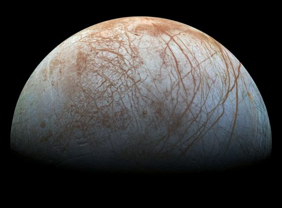
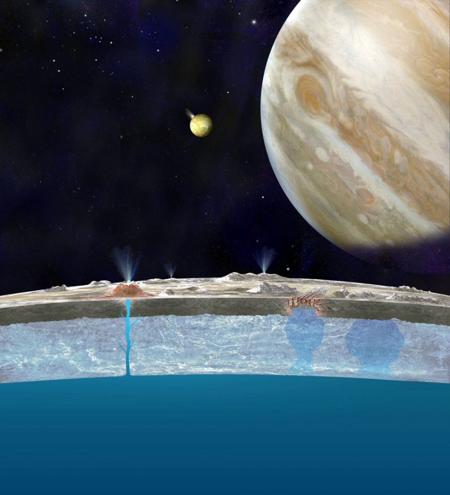
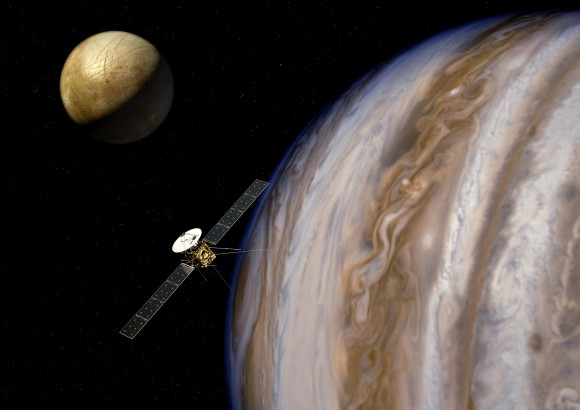

ဒီ ဓါတ်ပုံမှာ ယူရိုပါရဲ့ မျက်နှာပြင်မှာ ရေခဲ နေတာကို တွေ့ကြရ ပါတယ်။ ဒီ ပုံကို ကြည့်ပြီး အချို့ သိပ္ပံ ပညာရှင်တွေက ဒီ ရေခဲပြင် ရဲ့ အောက်မှာ အရည် ပျော် နေတဲ့ ရေပြင်ကြီး ရှိနေမယ် လို့ မှန်းဆခဲ့ ကြပါတယ်။ အဲ့သည် အချိန်က စလို့ ဒီ ယူရိုပါ လ ကို လေ့လာခဲ့တဲ့ သုတေသနေ တွေကနေ ထပ်မံ တွေ့ရှိ ခဲ့ရတဲ့ အချက်တွေက ဒီ အယူအဆကို ပိုပြီး ခိုင်မာလာ စေပါတယ်။
အချို့သော သိပ္ပံ ပညာရှင် တွေက ဒီ ယူရိုပါ လ ပေါ်က ဖုံးလွှမ်းထားတဲ့ ရေခဲပြင်ကြီး အောက်မှာ ပင်လယ်ပြင် ကြီးရှိနေပြီး အဲ့သည် ပင်လယ်ပြင် ရေထုထဲမှာ သက်ရှိတွေ မှီတင်း နေထိုင် နေနိုင် ကြလိမ့်မယ် လို့ ယူဆ ခဲ့ကြပါတယ်။
အခု နောက်ဆုံး ထုတ်ပြန်လိုက်တဲ့ သုတေသန စာတမ်း တစ်စောင်ရဲ့ အဆိုအရ ဒီ ယူရိုပါ လမှာ အရေပျော် နေတဲ့ ရေ ရှိနေတယ် ဆိုတဲ့ ခိုင်မာတဲ့ အထောက် အထား ရရှိထားပြီလို့ ဆိုပါတယ်။

ဒီ သုတေသနကို ပြုလုပ်ခဲ့တဲ့ သူတွေကတော့ ကေတီအိတ်ချ် တော်ဝင် နည်းပညာ တက္ကသိုလ် က သုတေသီ လိုရင့်ဇ် ရော့သ် (Lorenz Roth) နဲ့ အဖွဲ့ပဲ ဖြစ်ပါတယ်။ အခုလို ယူရိုပါ လရဲ့ လေထု ထဲမှာ ရေငွေ့ ရှာဖွေ တွေ့ရှိ ရတာဟာ နောင်ကို ဒီ လ ကို ပျံသန်း လေ့လာမယ့် စူးစမ်း လေ့လာရေး ယာဉ်တွေ အတွက် အရေးပါတဲ့ အချက်ပဲ ဖြစ်ပါတယ်။
ဒီ ယူရိုပါ လ ကို ၁၆၁၀ ခုနှစ်မှာ ဂယ်လီလီယို က ရှာဖွေ တွေ့ရှိခဲ့တာ ဖြစ်ပါတယ်။ ဒီ လရဲ့ ရေခဲ မျက်နှာပြင် အောက်ထဲမှာ ပင်လယ် ရေပြင် ရှိနေတယ် လို့ သိပ္ပံ ပညာရှင် တွေက ယုံကြည်နေ ခဲ့ကြတာပါ။ ဒါ့ကြောင့်လဲ ဒီ လကို သိပ္ပံ ပညာရှင် တွေက ပင်လယ်ကမ္ဘာ (Ocean World) လို့ တင်စား ပြောတာပါ။ (ပင်လယ် ကမ္ဘာလို့ တင်စား ပြောတဲ့ အခြား လ တွေလဲ နေ အဖွဲ့အစည်း ထဲမှာ ရှိနေပါ သေးတယ်)။
ကမ္ဘာ ပြင်ပမှာ သက်ရှိ တွေကို ရှာဖွေ နေတဲ့ သိပ္ပံ ပညာရှင် တွေကတော့ ဒီ ပင်လယ် ကမ္ဘာ တွေဟာ ပြင်က ကမ္ဘာက သက်ရှိတွေ ရှာဖွေဖို့ အကောင်းဆုံး နေရာ ဒေသတွေ လို့ ယုံကြည် ကြပါတယ်။
အခု သုတေသနမှာ ရော့သ် နဲ့ အဖွဲ့ဟာ နာဆာက လွှတ်တင်ထားတဲ့ ဟပ်ဗယ် နက္ခတ်ကြည့် တယ်လီစကုပ် မှန်ပြောင်းကြီး (Hubble Space Telescope) ကနေ ရိုက်ကူး ထားခဲ့တဲ့ အလင်းရောင်စဉ် မှတ်တမ်း (Space Telescope Imaging Spectrograph) တွေကို အသေးစိတ် ခွဲခြမ်း စိတ်ဖြာ သုတေသန ပြုလုပ်ခဲ့ ကြပါတယ်။
Spectrograph အလင်းရောင်စဉ် မှတ်တမ်း ဆိုတာက ကြယ် (သို့) ဂြိုဟ် တစင်းစင်းကနေ လာတဲ့ အလင်းရောင်ရဲ့ လှိုင်းအလျှား တွေကို ခွဲခြမ်း စိတ်ဖြာပြီး တိုင်းထွာထားတဲ့ မှတ်တမ်း ဖြစ်ပါတယ်။ အလွယ် ပြောရရင် အလင်းရောင်မှာ ပါလာတဲ့ အရောင် တစ်မျိုးခြင်းစီရဲ့ ပြင်းအားကို တိုင်းထွာတာပဲ ဖြစ်ပါတယ်။
ဂြိဟ် တစ်စင်း ကနေ ရောင်ပြန် ထွက်လာတဲ့ အလင်းရောင်ဟာ အဲ့သည် ဂြိုဟ်ရဲ့ လေထုကို ဖြတ်သန်း လာရပါတယ်။ ဒီလိုပဲ ကြယ်ရဲ့ အတွင်းပိုင်းက အဏုမြူ ဓါတ်ပြုမှုကြောင့် ထွက်လာတဲ့ ဖိုတွန် (photon) အလင်းမှုန် လေးတွေဟာလဲ နေရဲ့အပေါ်ယံ အခွံက ဓါတ်ငွေ့တွေကို ဖြတ်ပြီးမှ ထွက်လာတာ ဖြစ်ပါတယ်။ ဒီလို ဓါတ်ငွေ့ထုကို ဖြတ်သန်းလာတဲ့ အခါ ဒီ ဓါတ်ငွေ့ထဲ ရှိနေတဲ့ ဒြပ် ဝတ္ထု ပစ္စည်းတွေက အလင်းရောင်ရဲ့ အချို့သော အရောင် တွေကို စုပ်ယူ ထားလိုက်ပါတယ်။ ဒါကို Spectrograph မှာ ကြည့်လိုက်ရင် အဲ့သည် ဒြပ်စင် / ဒြပ်ပေါင်း က စုပ်ယူထား လိုက်တဲ့ အရောင် အားလျှော့နေတာ တွေ့ရမှာ ဖြစ်ပါတယ်။
ရော့သ် နဲ့ အဖွဲ့ဟာ Hubble တယ်လီ စကုပ် ကနေ ၁၉၉၉, ၂၀၁၁, ၂၀၁၄ နဲ့ ၂၀၁၅ ခုနှစ်တွေက ရိုက်ကူးထားတဲ့ စပက်ထရို ဂရပ် မှတ်တမ်းတွေ ကို အသေးစိတ် ခွဲခြမ်း စိတ်ဖြာ လေ့လာ ခဲ့ကြပါတယ်။ ဒီ မှတ်တမ်းတွေ အရ သိလာရ တာက ဒီ ယူရိုပါ လရဲ့ နေရောင် ကျရောက် နေတဲ့ ဖက်ခြမ်းက လေထုထဲမှာ အောက်ဆီဂျင် ဓါတ်ငွေ့ အမြောက် အများ ရှိနေတယ် ဆိုတာ သိလာရပါတယ်။

အရင်ကလဲ ယူရိုပါ လရဲ့ လေထုထဲမှာ ပါဝင်တဲ့ ရေငွေ့ ပျံ့နှံ့ပုံကို ကွန်ပြူတာနဲ့ ပုံတူ Simulation ပြုလုပ်ပြီး တွက်ချက် ကြည့်ခဲ့ကြ ဖူးပါတယ်။ ဒီ တွက်ချက်မှု Simulation တွေအရ ယူရိုပါ လရဲ့ ခေါင်းဖက်ခြမ်း နဲ့ အမြှီးဖက်ခြမ်း နှစ်ခုကြားမှာ ပါဝင်တဲ့ ရေငွေ့ ပမာဏ ကွာခြားမှု ရှိမယ် ဆိုတာကို တွေ့ရှိခဲ့ ကြပါတယ်။ ဒါပေမယ့် ဒီ ကွန်ပြူတာ တွက်ချက်မှုက ရတဲ့ အဖြေကို အပြင်မှာ လက်တွေ့ သက်သေ ပြနိုင်ခဲ့ခြင်း မရှိခဲ့ သေးပါဘူး။ အခု သုတေသန ရလဒ်ဟာ ဒီလို လေထုထဲမှာ ရေငွေ့ ရှိနေတယ် ဆိုတဲ့ အထောက်အထားကို ပထမဆုံး ရှာဖွေ တွေ့ရှိ ခြင်းပဲ ဖြစ်ပါတယ်။
သိပ္ပံ၏ မှတ်ချက်။ ခေါင်းဖက်နဲ့ အမြှီးဖက် ဆိုတာက လ က ဂျူပီတာကို ပတ်နေတဲ့ လမ်းကြောင်းမှာ သွားနေတဲ့ ဦးတည်ဖက် (Direction of motion) အရ ခေါ်ဆိုတာ ဖြစ်ပါတယ်။ ဦးတည်ရာ ဖက် ခြမ်းကို ခေါင်းဖက်ခြမ်း (Leading atmosphere) လို့ ခေါ်ပြီး နောက်က အမြှီးပိုင်း ကိုတော့ (Trailing atmosphere) လို့ ခေါ်တာ ဖြစ်ပါတယ်။ ဥပမာ ယူရိုပါ လကို လေယာဉ် တစ်စဉ်းလို သဘောထား လိုက်ရင် လေယာဉ် သွားနေတဲ့ ဖက်ခြမ်းက ခေါင်းပိုင်း ဖြစ်ပြီး လေယာဉ်ရဲ့နောက်ပိုင်းက အမြှီးပိုင်း ဖြစ်ပါတယ်။
“ဂယ်နီမိဒ် လ နဲ့ အခု ယူရိုပါရဲ့ အပြင်ဖက် ခြမ်းမှာ ရေငွေ့တွေ ရှိတယ် ဆိုတာကို တွေ့ရှိရခြင်းဟာ ဒီလို ရေခဲ ဖုံးလွှမ်း နေတဲ့ လ တွေနဲ့ ပါတ်သက်တဲ့ ကျွန်တော်တို့ရဲ့ အသိအမြင်ကို အများကြီး တိုးတက် သွားစေပါတယ်” လို့ အခု သုတေသနကို ဦးဆောင်ခဲ့သူ ရောသ် က ရှင်းပြပါတယ်။ “ဒီ ယူရိုပါ ပေါ်မှာ ရေငွေ့တွေ အမြောက်အများ ပုံမှန် ရှိနေတယ် ဆိုတဲ့ အချက်က အတော်လေး အံ့ဩစရာ ကောင်းပါတယ်။ ဘာကြောင့်လဲဆို ဒီ လပေါ်မှာ အပူချိန်က အတော်လေးကို အေးလို့ပါ” လို သူက ဆက်ပြောပါတယ် (အေးတော့ ပုံမှန်ဆို ရေငွေ့ မဖြစ်နိုင် တော့ပဲ ရေခဲ သွားတာမို့ပါ)။
ယူရိုပါ လရဲ့ အလင်း ရောင်ပြန်အားဟာ ဂယ်နီမိဒ် လ ထက် ပိုကောင်းပါတယ်။ လပေါ် ကျလာတဲ့ နေရဲ့ အလင်းရောင် အများစုကို ရောင်ပြန် ဟပ်လိုက်တာမို့ လ မျက်နှာပြင်ပေါ် ကျရောက်လာတဲ့ အလင်းရောင် နည်းနည်းပဲ အပူအဖြစ် ပြောင်းသွားပါတယ်။ သူ့ရဲ့ မျက်နှာပြင် အပူချိန်ဟာ အမြင့်ဆုံးမှ အနှုတ် (ရေခဲမှတ်အောက်) ၁၆၀ ဒီဂရီ စင်တီဂရိတ်ပဲ ရှိတာပါ။
ဒီလို တချိန်လုံး ရေခဲ အမှတ်အောက် အေးနေပေမယ့် ဒီ လ ရဲ့ အမြှီးဖက် ခြမ်းက မျက်နှာပြင်ကို ဖုံးထားတဲ့ ရေခဲတွေဟာ အငွေ့ပျံပြီး လေထုထဲကို ဝင်ရောက် သွားပါတယ်။ ဒီ ဝင်ရောက်သွားတဲ့ ရေခဲငွေ့ တွေဟာ ရေငွေ့တွေ အဖြစ် ပြောင်းသွားပြီး အာကာသ ထဲကို လွင့်မြောထွက် သွားတယ်လို့ ဆိုပါတယ်။
အရင်ကလဲ ယူရိုပါ လ ပေါ်မှာ ရေငွေ့ တွေ့ခဲ့ရ ဘူးပါတယ်။ ဒါပေမယ့် အဲ့သည် အချိန်တွေက တွေ့တာက ရေခဲ အက်ကြောင်း တွေကနေ လေထုထဲကို ကီလိုမီတာ ပေါင်းများစွာ ပန်းထွက်လာတဲ့ ရေငွေ့တွေ ဖြစ်ပါတယ်။ တခါတလေ ဒီ ရေပန်း တွေက ကီလိုမီတာ ၁၀၀ (၆၂ မိုင်) လောက် အမြင့်အထိ ရောက်နိုင်ပါတယ်။ ဒါပေမယ့် ဒီလို တွေ့ကတာက ခနတဖြုတ်ပဲ ဖြစ်ပြီး ဒီ ရေငွေ့တွေ လေထုထဲ ဆက်ပြီး ရှိနေ မရှိနေ ဆိုတာက အငြင်းပွားစရာ ဖြစ်နေ ခဲ့တာပါ။
အခု ဒီ သုတေသန အရတော့ ဒီလို ရေငွေ့ အများအပြားဟာ ဧရိယာ အကျယ်ကြီးမှာ အမြဲတမ်း လိုလို အမြောက်အများ ရှိနေ ခဲ့တယ် ဆိုတာကို သိလာရပါတယ်။ ဒါပေမယ့် ထူးဆန်းတာက ဒီ ရေငွေ့တွေကို ယူရိုပါရဲ့ ခေါင်းပိုင်းမှာ မတွေ့ရပဲ အမြှီးဖက် ခြမ်းက လေထု ထဲမှာပဲ တွေ့ရတာ ဖြစ်ပါတယ်။
ဒီလို အမြှီးဖက်ခြမ်းက လေထုထဲမှာပဲ ရေငွေ့တွေ တွေ့ရတဲ့ အကြောင်းရင်း ကိုတော့ သိပ္ပံ ပညာရှင်တွေ အခုထိ စဉ်းစားလို့ မရကြ သေးပါဘူး။ ဒါပေမယ့် သိဖို့ သိပ်ကြာကြာတော့ စောင့်ရမှာ မဟုတ်ပါဘူး။ ၂၀၂၄ ခု အောက်တိုဘာမှာ နာဆာကနေ ဒီ ယူရိုပါကို လေ့လာဖို့ အာကာသ ယာဉ်တစ်စင်း လွှတ်တင်မှာ ဖြစ်ပါတယ်။ Europa Clipper လို့ အမည်ပေးထားတဲ့ ဒီ အာကာသ စူးစမ်း ရှာဖွေရေး ယာဉ်ဟာ ၂၀၃၀ လောက်မှာ ယူရိုပါ လကို ရောက်ရှိမှာ ဖြစ်ပါတယ်။

ဒီ ယူရိုပါ ကလစ်ပါ အာကာသယာဉ်ဟာ နောင် လပေါ် ဆင်းသက်မယ့် အာကာသ ယာဉ်တွေ ဆင်းသက်ဖို့ နေရာကိုလဲ ရှာဖွေမှာ ဖြစ်ပါတယ်။ ဒီ ယူရိုပါ လဆင်းယာဉ် ဘယ်တော့ လွှတ်တင်ဖြစ်မယ် ဆိုတာကိုတော့ မသိရ သေးပါဘူး ခင်ဗျာ။
Reference:
Hubble Finds Evidence of Persistent Water Vapor in One Hemisphere of Europa | NASA
Europa has Water in its Atmosphere | Universe Today
Water vapor detected on Jupiter’s ocean moon Europa | SPACE